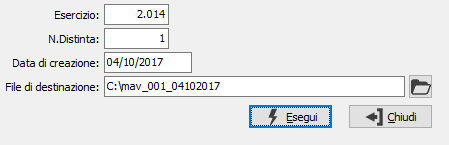

RI.BA. magnetiche - Home Banking
Il programma crea il “file Ri.Ba” che contiene l’elenco informatico delle ricevute relative ad una determinata distinta definitiva di presentazione effetti, secondo le specifiche del tracciato record utilizzato dall’ABI (Associazione Bancaria Italiana), oppure un file di testo o XML secondo le specifiche SEPA, oppure un file MAV (tracciato MAV-CBI).
Tale file, a cui deve essere assegnato un nome non più lungo di 8 caratteri e privo di punti e caratteri divisori, può successivamente essere trasmesso alla banca tramite un programma di home banking, oppure può essere generato su un floppy disk per la consegna, unitamente alla distinta, alla banca.

ESERCIZIO: inserire l'anno relativo agli effetti da generare.
NUMERO DISTINTA: inserire il numero progressivo della distinta di presentazione effetti di cui si vuole generare il file Ri.Ba. Normalmente viene presentato il numero dell’ultima distinta stampata.
DATA CREAZIONE: viene proposta la data del giorno, modificabile, che verrà memorizzata sul file.
FILE DESTINAZIONE: È il nome del file Ri.Ba. Gli utenti che intendono generare il file per acquisirlo tramite home banking, devono premettere al nome del file di destinazione il percorso per indicare la directory di destinazione in cui deve essere salvato il file.